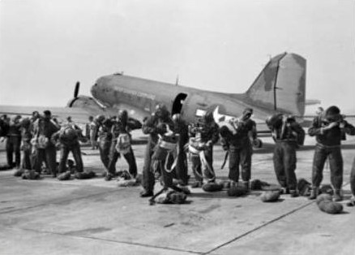
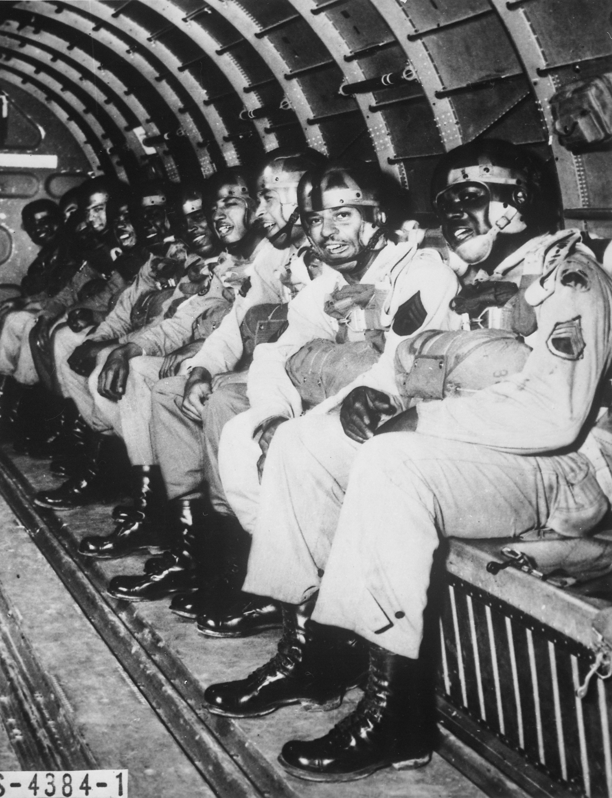
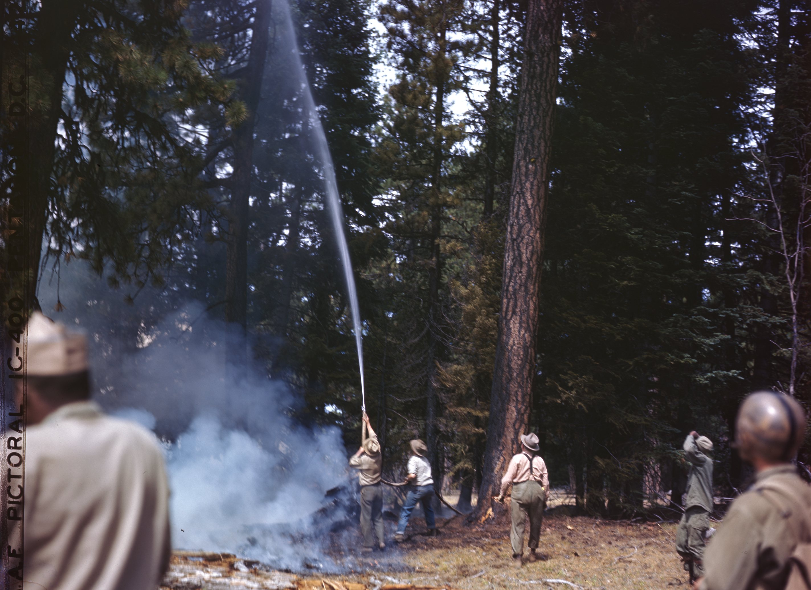

December 1943 — February 1944
The Pioneers: Breaking Barriers at Fort Benning
In the winter of 1943–44, twenty young African-American enlisted men were ordered to Fort Benning, Georgia to be trained as parachutists. These young men were pioneers because, never before in the segregated military system then prevalent, were Black soldiers considered capable of serving in elite combat units — certainly not as paratroopers.
1st Sergeant Walter Morris was the pivotal figure. A Black soldier from Georgia, Morris created an unauthorized training program to prepare his men while watching white paratroopers train around them. Brigadier General Ridgely Gaither discovered the program, was impressed, and helped Morris handpick 19 soldiers for a "colored test platoon."
"These men challenged the prejudices of their time and proved that courage knows no color."

February 18, 1944
Silver Wings: Triumph Over Adversity
Sixteen enlisted men completed the full Airborne School curriculum — four phases including five qualifying parachute jumps — and were awarded the silver wings of qualified paratroopers. They became America's first Black paratroopers. Six Black officers followed on March 4, 1944. Prominent among them was Second Lieutenant Bradley Biggs.
Now that the gates were open, a flood of young Black men volunteered for parachute training. The original 17 enlisted men and 6 officers grew rapidly into the 555th Parachute Infantry Company, then the 555th Parachute Infantry Battalion, attached to the 82nd Airborne Division at Fort Bragg, North Carolina.
"Something of a brotherhood developed whereby we worked together." — 2nd Lt. Bradley Biggs

November 25, 1944
The 555th Parachute Infantry Battalion
The company was redesignated as a full battalion at Camp Mackall, North Carolina — more than 400 men strong. The nickname "Triple Nickles" came from the numerical designation (555) and connected to the Buffalo Soldiers legacy through the three buffalo nickels on the insignia of the all-Black 92nd Infantry Division.
They trained for combat and were ready to deploy — but orders came for a mission no one expected.

May–October 1945
Operation Firefly: Heroes Above the Flames
Japan developed Fu-Go — unmanned hydrogen balloon bombs carried across the Pacific by jet streams, loaded with incendiary devices to ignite American forests. The Army needed elite soldiers who could parachute into remote mountain terrain to fight fires and locate bomb sites.
In May 1945, the 555th deployed to Pendleton, Oregon and Chico, California. Combat-ready paratroopers exchanged rifles for firefighting gear and became the Army's first smokejumpers — completing over 1,200 parachute jumps and controlling 36 fires across the Pacific Northwest.
The mission remained largely classified during the war. Private First Class Malvin Brown — a medic who volunteered to replace an ill colleague — died on August 6, 1945 after falling 150 feet from a tree in Oregon's Umpqua National Forest. He is the unit's only battlefield casualty.

December 15, 1947
Historic Integration: Six Months Before the Law
On a cold day in December 1947, members of the "Triple Nickles" Battalion stood in formation as the proud unit was deactivated — and all soldiers were transferred in grade and rank to the 3rd Battalion, 505th Parachute Infantry Regiment, 82nd Airborne Division.
This made the 82nd Airborne the first racially integrated division in U.S. Army history — a full six months before President Truman signed Executive Order 9981 on July 26, 1948, officially desegregating the armed forces.
Korean War — 1951
Legacy Continues: First Black Combat Jump
The legacy of the 555th carried into Korea. Many former Triple Nickles members volunteered for the 2nd Ranger Infantry Company (Airborne), which made the first all-Black combat jump by U.S. Army Rangers at Munsan-Ni in March 1951. Lt. Harry Sutton, a former 555th officer, was posthumously awarded the Silver Star.

Today
Enduring Impact: The Samuel Council Chapter
Without doubt, the courage and competency of the men of the 555th paved the way for the integrated military and civilian societies that all Americans enjoy today. The 555th Parachute Infantry Association was formed to pay homage to those brave troopers and to maintain their memory by doing good work for the society in which we live.
The Samuel Council Chapter continues this vital mission in Fayetteville, NC — through 48 annual scholarships, community engagement, and annual commemorative events — carrying the Triple Nickle legacy into the future.
"All blood runs red." — 1st Sgt. Walter Morris